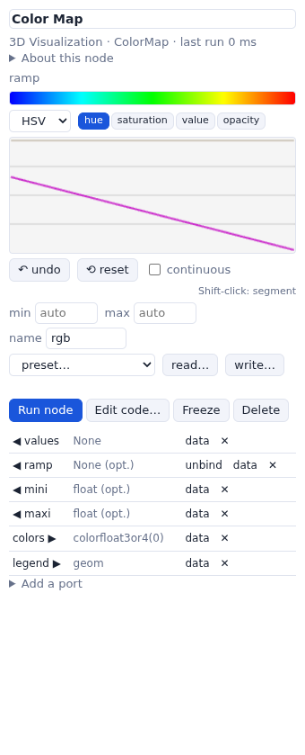
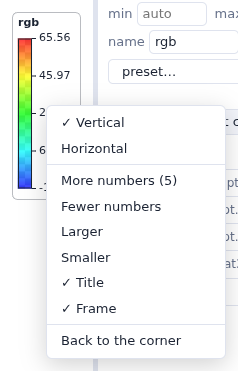

Color maps and legends
The Color Map node turns numbers into colors, with Vision's color map editor, and draws its legend over the 3D view.
Color Map (3D Visualization > Mapper) takes a list of numbers on its
values input and sends one color per value on colors, ready for the
colors input of a geometry or of a molecule's representation. The range of the values
is mapped onto the ramp: by default from the smallest value to the largest, or between the
mini and maxi given to its inputs or set in the editor.
The color map editor

Select the Color Map node: its ramp input has Vision's editor in the parameter
column.
- Draw the ramp's channels as curves, in RGB, HSV or HSL, and its opacity: choose a channel and draw with the mouse. The left button draws freehand; Shift-click draws a straight segment from the last point; the right button draws a straight line.
- undo (or Ctrl/Cmd-Z) and reset. With continuous checked the network follows the curve while you draw; otherwise it runs when you release the button.
- min and max: the range of the values (empty: the range of the data).
- name: the color map's name, shown as the legend's title.
- preset…: WEWoS's ramps (rgb, rwb, grey, rainbow) and the color maps that came with MGLTools.
- read… and write…: Vision's color map files (
*_map.py), which Vision reads too.
Transparent colors (opacity below 1) make transparent atoms and surfaces.
The legend
Connect Color Map's legend output to a Viewer's geometries: a color bar
with the range of the values and the color map's name appears over the view, in its top-right
corner, as DejaVu's legend did.

- Vertical or Horizontal; More or Fewer numbers (5 by default; a color map with labels shows them instead); Larger or Smaller; the Title and the Frame; Back to the corner.
- Its place is kept as a fraction of the view, so it stays put when the panel is resized; its place and options are saved with the network.
- It is drawn over the view the same way with 3Dmol.js and Mol*, follows the light or dark theme, and is in the pictures (the 📷 button, Grab Image).
A Vision network whose Color Map's legend went to a Viewer imports with the legend.